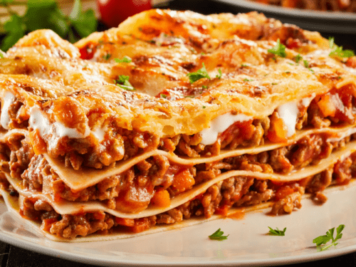

Lasagna

A Fantastic Homemade Lasagna Meal
Making lasagna can be time-consuming,
but the results are well worth the wait.
You'll find a detailed ingredient list and step-by-step
instructions in the recipe below, but let's go over the basics.
Ingredients
- Beef
- Onions
- Garlic
- Tomatoes
- Sugar
- Noodles
- Mozzarella
Steps
- Cook Ground Beef
- Sautee Onions and Garlic
- Prepare your sauce
- Boil your noodles
- Lay out first layer of noodles onto a baking sheet
- Combine and mix cooked ingredients into a bowl.
- Using a spoon, scoop cooked ingredients onto the layer of noodles
- Add cheese on top of cooked ingredients
- Add another layer of noodles
- Repeat steps 7-9 until you have reached desired lasagna height
- Top with Mozarella cheese and sauce; bake at 375F and 25 minutes